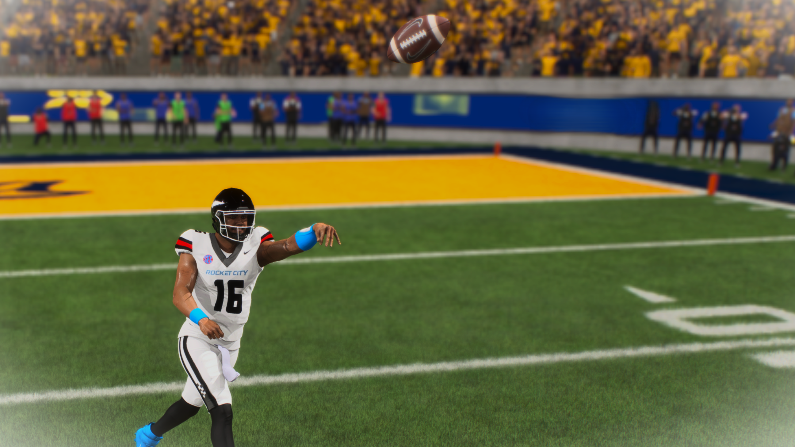

Greg Williams
#16 | Quarterback | True Freshman
Fort Lauderdale, Florida | 6'4", 220 lbs
Player Information
| Detail | Info |
|---|---|
| Full Name | Greg Williams |
| Number | #16 |
| Position | Quarterback (QB) |
| Class | True Freshman |
| Height / Weight | 6'4" / 220 lbs |
| Hometown | Fort Lauderdale, Florida |
| Status | Returns as a True Sophmore |
Awards and Honors
| Award |
|---|
| SEC Freshman Team |
Season 1 Passing Stats
| Stat | Value |
|---|---|
| Games Played / Started | 12 |
| Completions / Attempts | 227 / 365 |
| Completion Percentage | 62% |
| Passing Yards | 3,222 |
| Passing Touchdowns | 23 |
| Interceptions | 10 |
| Yards Per Attempt | 8.8 |
| Passer Rating | 152 |
| Longest Pass | 83 yds |
| Sacks Taken | 9 |
Development Arc: First Half vs Second Half
| Split | Games | INT | INT/Game | Zero-Turnover Games |
|---|---|---|---|---|
| First 4 Starts | 4 | 7 | 1.75 | 0 |
| Last 8 Starts | 8 | 3 | 0.38 | 5 |
Top 3 Performances
| Game | Comp/Att | Yards | TD | INT | Highlight |
|---|---|---|---|---|---|
| Week 13 @ Georgia State (W 65-3) | 28/41 | 476 | 2 | 1 | Set single-game passing yards record (476). His INT was immediately erased by Tim Missile forcing a fumble on the next play. |
| Week 12 @ #18 Alabama (L 38-45) | 24/35 | 276 | 2 | 1 | 68% completion rate. Threw for 276 in a hostile rivalry environment. Game-killing late INT was his only blemish in an otherwise strong performance. |
| Week 8 @ Boise State (W 35-23) | 14/16 | 255 | 2 | 0 | 87% completion rate. Most efficient passing game of the season. Zero turnovers. Complete command of the offense. |
Highlight

Player Storyline | The Freshman
Greg Williams' first season as a Moon Man did not start off the way anyone was expecting. He walked on to this program as a 5-star recruit, who from day one, clearly had the strongest arm on the roster and won the starting job as a true freshman. The talent and potential was obvious from the first throw he made. The problem was everything that came with it.
Williams played like he could make every throw on the field, regardless of the coverage, regardless of the pressure, regardless of what the clear “smart play” was. He forced passes into double coverage, he often held the ball too long, he always was looking for the big play. Through his first four games, he threw seven interceptions, three of those coming from just one game.
But after that awful game, something flipped. Williams became a different quarterback. He stopped forcing throws. He started managing games, playing within the offense, trusting his running backs and his defense to do their jobs while he did his, only throwing three interceptions the rest of the season. From the midpoint of the season onward, Greg played like a top-10 quarterback in college football.
He finished the season with over 3,200 passing yards and 23 touchdowns. He earned Southeastern Conference Freshman Team honors and was named a team captain. More importantly, he developed, finishing the season as the most improved player on the roster, and is ranked as one of the highest-rated quarterbacks in the country going into his sophomore year.